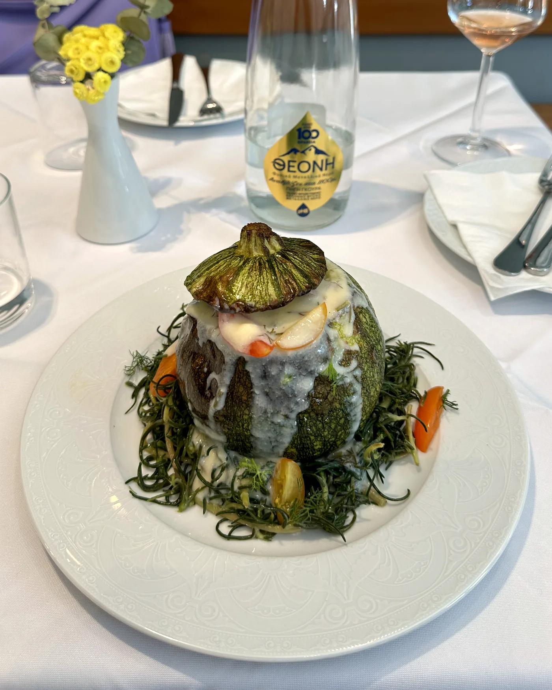

Estrella
Estrella
El más pedidoMusaka tradicional
Montada por capas, como debe ser. La que usará para comparar todas las demás.
En esta cocina de Koukaki se cocina sin interrupción desde 1956. Hoy, el equipo de Little Noe mantiene vivas las recetas tradicionales con una elaboración más ligera y un respeto absoluto por el original. Sin menús para turistas: solo mesa griega de verdad, a un paso del museo.

Todo empieza por el producto: aceite de oliva virgen ecológico Sakellaropoulos, técnicas más ligeras, menos mantequilla. El verdadero sabor griego, bien cocinado y fácil de disfrutar.
Estrella
Montada por capas, como debe ser. La que usará para comparar todas las demás.
 En su mesa
En su mesa
Elegido en su propia mesa. Nuestro equipo le muestra la pesca del día y le aconseja la mejor preparación.

EstrellaNuestro plato estrella, junto a los linguine con langostinos. Producto premium, cocinado con mimo.
Un barrio ateniense de verdad, no una trampa para turistas – justo lo que apetece para sentarse tras un día de visitas.
Cookaki está en Petmeza 5, en Koukaki – a solo 3 minutos en taxi o 10 minutos a pie de los hoteles de la avenida Syngrou, como el Grand Hyatt Athens y el Athenaeum InterContinental. Ideal para huéspedes de hoteles y familias.
A 5 minutos a pie del Museo de la Acrópolis
Las mejores mesas de Koukaki se llenan rápido, sobre todo por la noche. Asegure la suya ahora – en línea en menos de un minuto, o con un mensaje por WhatsApp.